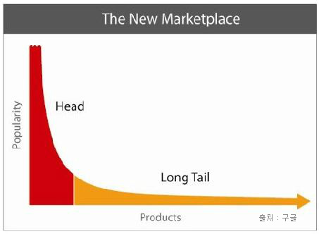
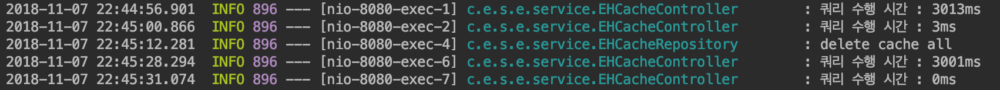

들어가며..
엔터프라이즈 급 Application에서는 DBMS의 부하를 줄이고, 성능을 높이기 위해 캐시(Cache)를 사용한다. 우리 회사에서도 EHCache, Redis를 사용하지만, EHCache쪽은 공부한 적이 없어서 이번 기회에 정리하면서 공부해 보게 되었다.
대부분 docs.spring.io의 문서를 번역한 내용을 위주로 정리 하였다.
Cache란?
Cache의 사전적인 의미를 알아보기 위해 위키백과를 검색해 보았다.
캐시(cache, 문화어: 캐쉬, 고속완충기, 고속완충기억기)는 컴퓨터 과학에서 데이터나 값을 미리 복사해 놓는 임시 장소를 가리킨다. 캐시는 캐시의 접근 시간에 비해 원래 데이터를 접근하는 시간이 오래 걸리는 경우나 값을 다시 계산하는 시간을 절약하고 싶은 경우에 사용한다. 캐시에 데이터를 미리 복사해 놓으면 계산이나 접근 시간 없이 더 빠른 속도로 데이터에 접근할 수 있다.
캐시는 시스템의 효율성을 위해 여러 분야에서 두루 쓰인다.
결국 캐시란, 반복적으로 데이터를 불러올 때 지속적으로 DBMS 혹은 서버에 요청하는 것이 아닌 메모리에 데이터를 저장하였다가 데이터를 불러다가 쓰는 것을 의미한다. 따라서 서버나 DBMS에 부담을 덜어주고, 엄청 빠르기 때문에 많은 시스템에서 사용하고 있다. 대표적으로 Browser Cache, Apacha Cache, DNS Cache등 여러가지 형태로 캐시가 사용되고 있다.
EHCache 사이트에서는 캐시에 대한 용어를 이렇게 정리 하였다.
- Cache : 캐시는
미래에 필요할 것이고 빠르게 검색할 수 있는 데이터를 담은 저장소라고 정의 한다. 캐시는 다른 곳에 있는 데이터를 복제하거나, 계산 결과를 임시적으로 저장하는 데이터 저장소이다. 캐시에 있는 데이터는 시간과 자원 면에서 최소한의 비용으로 반복적으로 접근 할 수 있다. - Cache Hit : 데이터 요소가 캐시에 요청되고 해당 키에 대한 요소가 존재하면 Cache Hit (또는 단순히 'Hit')라고 한다.
- Cache Miss:데이터 요소가 캐시에 요청되고 해당 키에 대해 요소가 존재하지 않으면 Cache Miss (또는 단순히 'Miss')라고 한다.
- System-of-record : 데이터에 대한 신뢰할 수있는 정보원. 이것을 흔히 시스템 레코드(SOR)이라고 한다. 캐시는 시스템 레코드에서 검색되거나 시스템 레코드에 저장된 데이터의 로컬 사본으로 작동된다. Ehcache를 사용하기 위해 SOR은 데이터베이스로 간주된다.
Long Tail 법칙

20%의 요구가 시스템 리소스의 대부분을 잡아먹는다는 법칙.
자주 사용되는 20%의 기능에 캐시를 이용하면 리소스 사용량을 대폭 줄일 수 있어, 시스템의 성능을 대폭 향상 시킬 수 있다.
Local Cache vs Global Cache
-
Local Cache
- Local 장비 내에서만 사용 되는 캐시
- Local 장비의 Resource를 이용한다 (Memory, Disk)
- Local에서 작동 되기 때문에 속도가 빠르다.
- Local에서만 작동되기 때문에 다른 서버와 데이터 공유가 어렵다
-
Global Cache
- 여러 서버에서 Cache Server에 접근하여 사용하는 캐시
- 데이터를 분산하여 저장 할 수 있다.
- Replication - 데이터를 복제
- Sharding - 데이터를 분산하여 저장
- Local Cache에 비해 상대적으로 느리다 (네트워크 트래픽)
- 별도의 Cache Server를 이용하기 때문에 서버 간 데이터 공유가 쉽다.
Spring Cache Abstraction
Spring 3.1버전부터 Spring Application에 캐시를 쉽게 추가할 수 있도록 기능을 제공하게 되었다. 유사 트랜잭션을 지원하고, 사용하고 있는 코드(메소드)에 영향을 최소화 하면서 일관된 방법으로 캐시를 사용 할 수 있게 되었다.
Spring에서 캐시 추상화는 메소드를 통해 기능을 지원하는데, 메소드가 실행되는 시점에 파라미터에 대한 캐시 존재 여부를 판단하여 없으면 캐시를 등록하게 되고, 캐시가 있으면 메소드를 실행 시키지 않고 캐시 데이터를 Return 해주게 된다.
Spring 캐시 추상화를 지원하기 때문에 개발자는 별도의 캐시 로직을 작성하지 않아도 된다. 하지만 캐시를 저장하는 저장소는 직접 설정을 해주어야 한다. Spring에서는 CacheManager라는 Interface를 제공하여 캐시를 구현하도록 하고 있다.
<br/>
1
2
3
4<dependency>
<groupId>org.springframework.boot</groupId>
<artifactId>spring-boot-starter-cache</artifactId>
</dependency>
Spring Boot에서는 spring-boot-starter-cache Artifact를 추가 하여 CacheManager를 구성 할 수 있다.
기본적으로 별도의 추가적인 서드파티 모듈이 없는 경우에는 Local Memory에 저장이 가능한 ConcurrentMap기반인 ConcurrentMapCacheManager가 Bean으로 자동 생성 된다.
이외에도 EHCache, Redis등의 서드파티 모듈을 추가 하게 되면 EHCacheCacheManager, RedisCacheManager를 Bean으로 등록 하여 사용할 수 있다. 이렇게 되면 별도로 다른 설정 없이도 단순 Memory Cache가 아닌 Cache Server를 대상으로 캐시를 저장 할 수 있도록 지원하고 있다.
Spring Cache Annotation
Spring에서는 Cache Annotation을 지원하여 좀 더 쉽게 메서드에 대한 캐시를 제어할 수 있다.
- @EnableCaching
- Annotation 기반 캐싱 설정을 사용 (내부적으로 Spring AOP 이용)
| 속성 | 설명 | Default |
|---|---|---|
| proxyTargetClass | 클래스 기반의 Proxy생성 여부<br />false인 경우 JDK Dynamic Proxy 사용 (Interface 기반)<br />true인 경우 CGLIB Proxy 사용 (Class 기반) | false |
| mode | 위빙 (Weaving) 모드에 대한 설정<br />PROXY : 기존의 Spring AOP 방식을 이용한 RTW방식 사용<br />ASPECTJ : aspectj 라이브러리를 이용한 CTW, LTW 방식 지원 | PROXY |
| order | AOP order 설정 | Integer.MAX_VALUE |
- @Cacheable
- 캐싱할 수 있는 메서드를 지정하기 위해 사용
| 속성 | 설명 | Default |
|---|---|---|
| value, cacheName | 캐시 명 | {} |
| key | 같은 캐시명을 사용 할 때, 구분되는 구분 값 (KeyGenerator와 함께 쓸 수 없다.) | "" |
| keyGenerator | 특정 로직에 의해 cache key를 만들고자 하는 경우 사용<br />4.0이후 버전 부터 SimpleKeyGenerator를 사용<br />Custom Key Generator를 사용하고 싶으면, KeyGenerator 인터페이스를 별도로 구현 | "" |
| cacheManager | 사용할 CacheManager를 지정 (EHCacheManager, RedisCacheManager등) | "" |
| cacheResolver | Cache 키에 대한 결과값을 돌려주는 Resolver (Interceptor역할)<br />CacheResolver를 구현하여 Custom하게 처리 할 수도 있다. | "" |
| condition | SpEL 표현식을 통해 특정 조건에 부합하는 경우에만 캐시 사용<br />and, or 표현식등을 통해 복수 조건 사용가능<br />연산 조건이 true인 경우에만 캐싱 |
"" |
| unless | 캐싱이 이루어지지 않는 조건을 설정<br />연산 조건이 true 이면 경우에는 캐싱되지 않는다<br />예시 : id가 null아 아닌 경우에만 캐싱 (unless = "#id == null") |
"" |
| sync | 캐시 구현체가 Thread safe 하지 않는 경우, 자체적으로 캐시에 동기화를 거는 속성 | false |
- @CacheEvict
- 메서드 실행 시, 해당 캐시를 삭제
| 속성 | 설명 | Default |
|---|---|---|
| value, cacheName | 캐시 명 | {} |
| key | 같은 캐시명을 사용 할 때, 구분되는 구분 값 (KeyGenerator와 함께 쓸 수 없다.) | "" |
| keyGenerator | 특정 로직에 의해 cache key를 만들고자 하는 경우 사용<br />4.0이후 버전 부터 SimpleKeyGenerator를 사용<br />Custom Key Generator를 사용하고 싶으면, KeyGenerator 인터페이스를 별도로 구현 | "" |
| cacheManager | 사용할 CacheManager를 지정 (EHCacheManager, RedisCacheManager등) | "" |
| cacheResolver | Cache 키에 대한 결과값을 돌려주는 Resolver (Interceptor역할)<br />CacheResolver를 구현하여 Custom하게 처리 할 수도 있다. | "" |
| condition | SpEL 표현식을 통해 특정 조건에 부합하는 경우에만 캐시 사용<br />and, or 표현식등을 통해 복수 조건 사용가능<br />연산 조건이 true인 경우에만 캐시 삭제 |
"" |
| allEntries | Cache Key에 대한 전체 데이터 삭제 여부 | false |
| beforeInvocation | true면 메서드 실행 이전에 캐시 삭제, false면 메서드 실행 이후 삭제 | false |
- @CachePut
- 메서드 실행에 영향을 주지 않고 캐시를 갱신해야 하는 경우 사용
- 보통은 @Cacheable과 @CachePut Annotation을 같이 사용하지 않는다. (둘은 다른 동작을 하기 때문에, 실행순서에 따라 다른 결과가 나올 수 있다.)
- @CachePut Annotation은 캐시 생성용으로만 사용한다.
| 속성 | 설명 | Default |
|---|---|---|
| value, cacheName | 캐시 명 | {} |
| key | 같은 캐시명을 사용 할 때, 구분되는 구분 값 (KeyGenerator와 함께 쓸 수 없다.) | "" |
| keyGenerator | 특정 로직에 의해 cache key를 만들고자 하는 경우 사용<br />4.0이후 버전 부터 SimpleKeyGenerator를 사용<br />Custom Key Generator를 사용하고 싶으면, KeyGenerator 인터페이스를 별도로 구현 | "" |
| cacheManager | 사용할 CacheManager를 지정 (EHCacheManager, RedisCacheManager등) | "" |
| cacheResolver | Cache 키에 대한 결과값을 돌려주는 Resolver (Interceptor역할)<br />CacheResolver를 구현하여 Custom하게 처리 할 수도 있다. | "" |
| condition | SpEL 표현식을 통해 특정 조건에 부합하는 경우에만 캐시 사용<br />and, or 표현식등을 통해 복수 조건 사용가능<br />연산 조건이 true인 경우에만 캐싱 |
"" |
| unless | 캐싱이 이루어지지 않는 조건을 설정<br />연산 조건이 true 이면 경우에는 캐싱되지 않는다<br />예시 : id가 null아 아닌 경우에만 캐싱 (unless = "#id == null") |
"" |
- @Caching
- @CacheEvict이나 @CachePut을 여러개 지정해야 하는 경우에 사용
- 조건식이나 표현식이 다른 경우에 사용한다.
- 여러가지의 key에 대한 캐시를 중첩적으로 삭제해야 할 때 사용
| 속성 | 설명 | Default |
|---|---|---|
| cacheable[] | @Cacheable 적용할 Annotation을 등록한다. | {} |
| put[] | @CachePut 적용할 Annotation을 등록한다. | {} |
| evict[] | @CacheEvic 적용할 Annotation을 등록한다. | {} |
- @CacheConfig
- 클래스 단위로 캐시설정을 동일하게 하는데 사용
- 이 설정은 CacheManager가 여러개인 경우에만 사용
- Member조회 클래스에서는 Redis기반 캐시를 사용하고 Product 조회 클래스에서는 EHCache 기반 캐시를 사용할 때 각 클래스 별로 CacheManager를 지정 가능
| 속성 | 설명 | Default |
|---|---|---|
| cacheNames | 캐시 명 | {} |
| keyGenerator | 특정 로직에 의해 cache key를 만들고자 하는 경우 사용<br />4.0이후 버전 부터 SimpleKeyGenerator를 사용<br />Custom Key Generator를 사용하고 싶으면, KeyGenerator 인터페이스를 별도로 구현 | "" |
| cacheManager | 사용할 CacheManager를 지정 (EHCacheManager, RedisCacheManager등) | "" |
| cacheResolver | Cache 키에 대한 결과값을 돌려주는 Resolver (Interceptor역할)<br />CacheResolver를 구현하여 Custom하게 처리 할 수도 있다. | "" |
EHCache
- EHCache는 오픈 소스 기반의 Local Cache이다.
- 속도가 빠르며 경량 Cache라는 장점이 있다.
- Disk, Memory 저장이 가능한 형태
- 서버 간 분산 캐시를 지원한다 (동기/비동기 복제)
- JSR107 JCache 표준을 지원한다. 따라서 JCache에서 제공하는 Annotation을 통해 이미 작성된 코드에 간단하게 기능 추가가 쉽다.
JSR-107 : (JCACHE – Java Temporary Caching API) 객체 생성, 공유 액세스, 스풀링, 무효화 및 JVM 전반에 걸친 일관성을 포함하여 Java 객체의 메모리 캐싱에서 사용할 API 에 대한 기준으로 볼 수 있다. 해당 Spec 으로 구현된 cache로는 EhCache가 유명하며, Hazelcast, Infinispan, Couchbase, Redis, Caffeine 등도 해당 기준을 따르는 것으로 알려져 있다.
EHCache 설정 방법
내용이 길어 질 것 같아 별도의 포스트로 작성
EHCache 예시 코드
테스트 시나리오
- 가상으로 DBMS에서 데이터를 조회 하는 Repository를 생성
- 3초 정도 슬로우쿼리가 실행된다고 가정
- 최초 1회는 DB에서 조회, 2회차 부턴 캐시 사용
- 캐시를 조회했을 때, 걸리는 시간 확인
- 캐시가 만료되었을때, 걸리는 시간 확인
1
2
3
4
5
6
7
8
9
10
11
12
13
14
15
16
17
18
19
20
21
22
234j
public class EHCacheController {
private EHCacheRepository repository;
("/data/{id}")
public String getData(@PathVariable("id") int id) throws InterruptedException {
long start = System.currentTimeMillis();
String data = repository.getData(id);
long end = System.currentTimeMillis();
log.info("쿼리 수행 시간 : {}ms", end-start);
return data;
}
("/data/delete/{id}")
public void getExpireCache(@PathVariable("id") int id) {
repository.evictCache(id);
}
}
1
2
3
4
5
6
7
8
9
10
11
12
13
14
154j
public class EHCacheRepository {
(cacheNames = "testData")
public String getData(int id) throws InterruptedException {
Thread.sleep(3000);
return "test-data";
}
(cacheNames = "testData", allEntries = true)
public void evictCache(int id) {
log.info("delete cache all");
}
}
1
2
3
4
5
6
7
8
9
10
11
12
13
14
15
16
17
18
(proxyTargetClass = true, mode = AdviceMode.PROXY)
public class EHCacheConfig {
public EhCacheManagerFactoryBean ehCacheManagerFactoryBean() {
EhCacheManagerFactoryBean ehCacheManagerFactoryBean = new EhCacheManagerFactoryBean();
ehCacheManagerFactoryBean.setConfigLocation(new ClassPathResource("config/ehcache.xml"));
ehCacheManagerFactoryBean.setShared(true);
return ehCacheManagerFactoryBean;
}
public EhCacheCacheManager ehCacheCacheManager(EhCacheManagerFactoryBean ehCacheManagerFactoryBean) {
EhCacheCacheManager ehCacheCacheManager = new EhCacheCacheManager();
ehCacheCacheManager.setCacheManager(ehCacheManagerFactoryBean.getObject());
return ehCacheCacheManager;
}
}
1
2
3
4
5
6
7
8
9
10
11
12
13
14
15
16
17
18
19
20
21
22
23
24
25
26
27
28
29
30
31
32
33
34
35
36
37
38<?xml version="1.0" encoding="UTF-8"?>
<ehcache xmlns:xsi="http://www.w3.org/2001/XMLSchema-instance"
xsi:noNamespaceSchemaLocation="http://ehcache.org/ehcache.xsd"
maxBytesLocalHeap="300M"
updateCheck="false">
<diskStore path="java.io.tmpdir" />
<sizeOfPolicy maxDepth="100000" maxDepthExceededBehavior="continue"/>
<defaultCache
eternal="false"
timeToIdleSeconds="0"
timeToLiveSeconds="1200"
overflowToDisk="false"
diskPersistent="false"
diskExpiryThreadIntervalSeconds="120"
memoryStoreEvictionPolicy="LRU">
</defaultCache>
<cache name="LocalCacheData"
eternal="false"
timeToIdleSeconds="0"
timeToLiveSeconds="1200"
overflowToDisk="false"
diskPersistent="false"
diskExpiryThreadIntervalSeconds="120"
memoryStoreEvictionPolicy="LRU">
</cache>
<cache name="testData"
eternal="false"
timeToIdleSeconds="0"
timeToLiveSeconds="100"
overflowToDisk="false"
diskPersistent="false"
memoryStoreEvictionPolicy="LRU">
</cache>
</ehcache>
<br/>
결과

- 최초로
GET localhost:8080/data/1요청 시, 3초 이상의 슬로우 쿼리가 실행 - 두번째로 동일하게
GET localhost:8080/data/1요청 시, 3ms의 빠른 실행 결과가 나타남 (캐시 적용) GET localhost:8080/data/delete/1요청으로 캐시 삭제GET localhost:8080/data/1요청 시, 3초 이상의 슬로우 쿼리가 실행 (캐시 삭제 후 요청)GET localhost:8080/data/1요청 시, 3ms의 빠른 실행 결과가 나타남 (캐시 적용)
주의 할 점!
EHCache는 ehcache.xml 또는 Java 코드에서 addCache를 이용하여 반드시 Cache Key를 등록해 줘야 함 이거를 안 등록하고 Cache Key를 막쓰다가.. 계속 Cache Key가 없다는 오류가 발생하여 잠깐 삽질..
참고
- http://www.ehcache.org/documentation/2.8/integrations/spring.html#introduction
- https://docs.spring.io/spring/docs/current/spring-framework-reference/integration.html#cache
- http://blog.breakingthat.com/2018/03/19/springboot-ehcache-%EC%A0%81%EC%9A%A9/
- https://jojoldu.tistory.com/57
- http://www.ehcache.org/documentation/2.8/configuration/index.html
- https://www.slideshare.net/heungrae_kim/spring-31-ehcache
- https://shortstories.gitbooks.io/studybook/content/cache.html